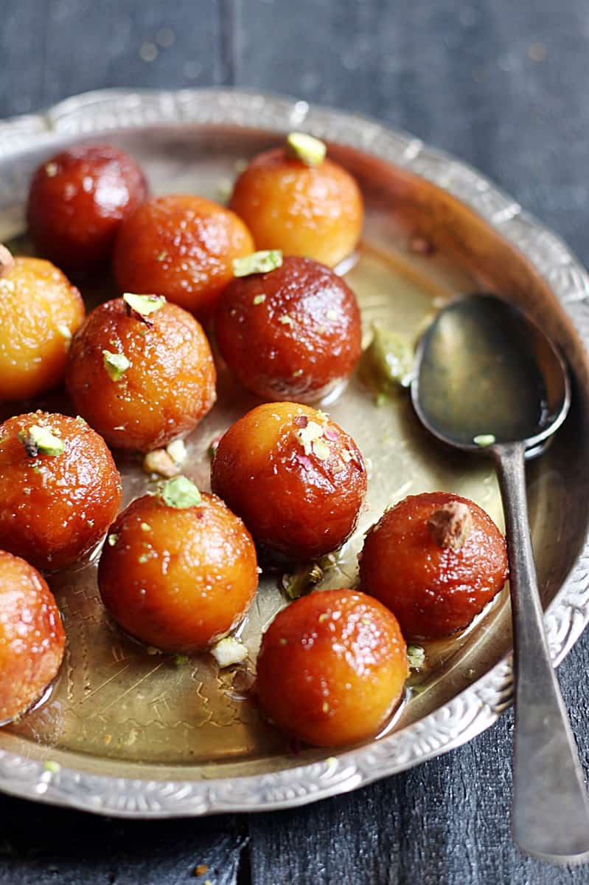

Famous Indian Foods
Home | Destinations | Foods | Places | Gallery | Contact
Indian cuisine is famous all over the world for its spices, flavours and variety.
Every state in India has its own special dishes.
5 Famous Dishes
- Biryani
- Butter Chicken
- Masala Dosa
- Samosa
- Gulab Jamun
Food Categories
- North Indian
- South Indian
- Street Food
- Desserts
Dish Descriptions
- Biryani
- A rice dish cooked with spices and meat or vegetables.
- Masala Dosa
- A crispy South Indian pancake filled with spicy potato.
- Gulab Jamun
- A sweet dessert made of fried dough soaked in sugar syrup.
Food Images


